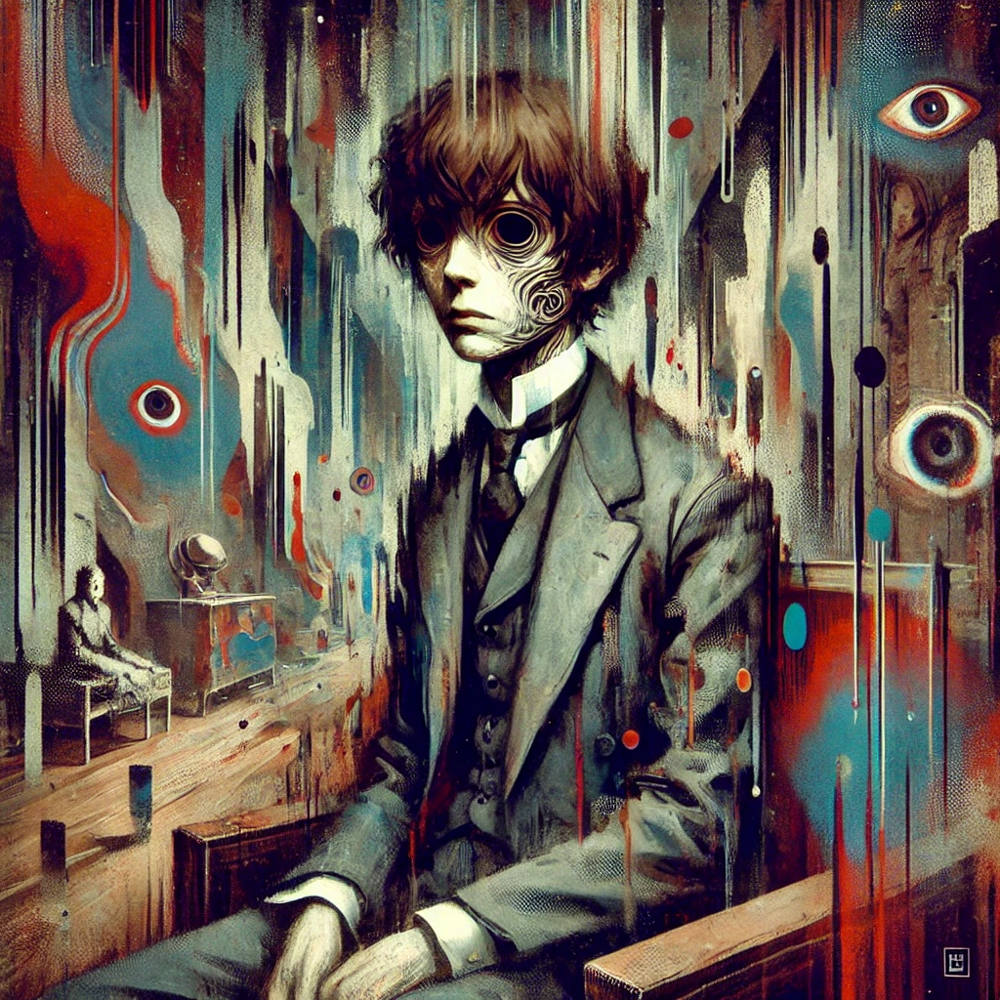

작가
다자이 오사무
출판일
1948년
감상평에 대한 AI그림
주인공의 비참한 인생관을 보여주는 책이다. 왠지 책을 읽을때 기분이 나빴지만 세상속에서 느끼는 고독을 느낄 수 있었다.

감상평에 대한 AI평가
다자이 오사무의 인간 실격은 인간 사회에 적응하지 못하는 한 남자의 절망과 내면적 고통을 적나라하게 그려낸 작품이다.
주인공 요조는 끝없는 자기부정과 타인과의 단절 속에서 점점 파멸해 가며, 이는 인간 존재의 불안과 소외를 극단적으로 보여준다.
그의 나약함과 방황은 독자에게 깊은 공감을 불러일으키는 동시에, 인간 본질에 대한 날카로운 질문을 던진다.